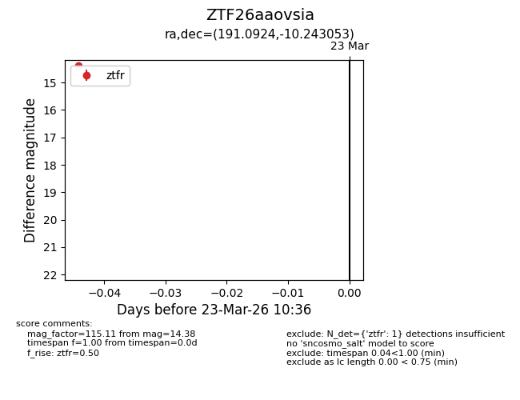
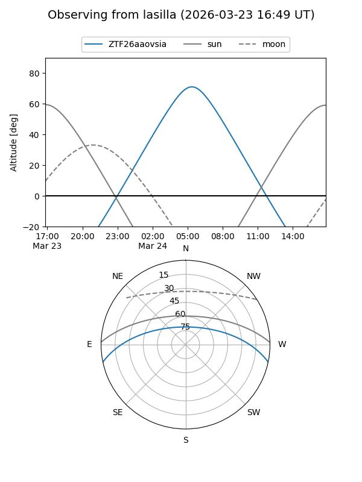
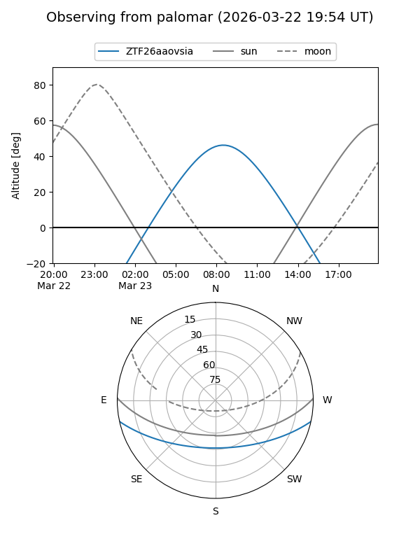

ZTF26aaovsia
Target ZTF26aaovsia at 2026-03-23 10:38
Aliases and brokers:
FINK: link
Lasair: link
ALeRCE: link
alt names
ZTF26aaovsia (ztf,fink_ztf)
Coordinates:
equatorial (ra, dec) = 191.0924,-10.24305
equatorial (HMS+DMS) = 12:44:22.17,-10:14:34.99
galactic (l, b) = (300.0689,+52.58940)
Flags:
Photometry:
last ztfr=14.38
1 ztfr detections
Lightcurve

Visibility


Additional plots